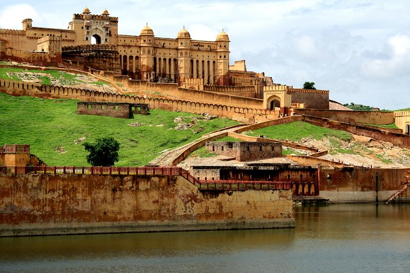
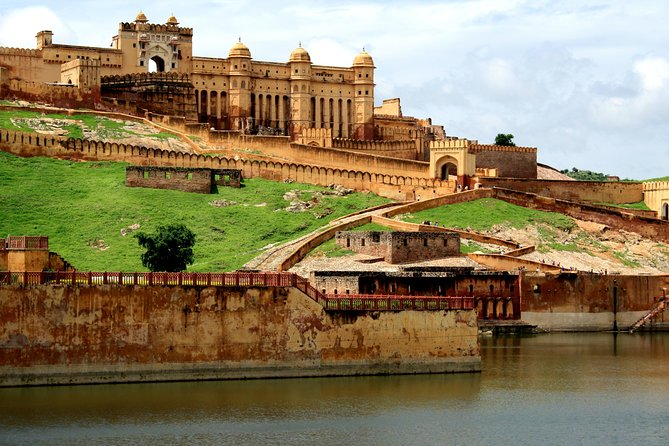

Top Sustainable Destinations

MANALI
A Manali tourism package offers a comprehensive and enchanting escape to one of India's premier hill stations, nestled in Himachal Pradesh. This package typically includes stays in luxurious resorts or charming lodges, providing a comfortable base to explore the town's stunning natural beauty. The itinerary often features visits to renowned attractions like Solang Valley, which is perfect for adventure enthusiasts with activities such as skiing, paragliding, and zorbing. The nearby Rohtang Pass, with its breathtaking snow-covered peaks and panoramic views, is another highlight, offering opportunities for snow activities and a gateway to the Lahaul and Spiti valleys. The package generally includes guided tours of Manali's cultural and historical sites. The Hadimba Temple, situated amidst a serene cedar forest, showcases unique pagoda-style architecture and holds significant cultural value. Additionally, Old Manali retains its traditional charm with narrow lanes, vibrant local markets, and quaint houses, providing a glimpse into the local lifestyle and heritage. For relaxation, the package often includes leisurely walks along the Beas River, where visitors can enjoy the tranquil surroundings. Spa treatments and yoga sessions in scenic locations are also typically part of the experience, offering a chance to unwind and rejuvenate. Adventurous activities such as trekking in the surrounding hills or visiting the majestic Dudhsagar Waterfalls can be included, adding a thrilling dimension to the trip. Overall, a Manali tourism package blends adventure, cultural exploration, and relaxation, ensuring a memorable and diverse experience for travelers seeking both excitement and serenity in this beautiful region.
PACKAGE :50K per person
DISCOUNT : 20% off for first 10 bookings
.jpeg)
.jpeg)
GOA
A Goa tourism package promises an unforgettable getaway to one of India’s most alluring destinations. Known for its pristine beaches, such as Baga, Anjuna, and Calangute, the package typically includes stays at luxurious beachfront resorts or charming boutique hotels. These idyllic beaches offer opportunities for sunbathing, water sports, and vibrant beach parties. The package often features guided tours of historical forts like Aguada and Chapora, as well as the colonial architecture of Old Goa, providing a glimpse into the region’s rich cultural heritage. Activities such as dolphin watching, Mandovi River cruises, and visits to the majestic Dudhsagar Waterfalls are included to add adventure and natural beauty to the experience. Culinary delights are another highlight, with options to enjoy Goan seafood and local dishes at beachside shacks and fine dining restaurants. The lively nightlife, with its array of beach clubs and bars, ensures memorable evenings filled with music and dance. For relaxation, the package offers spa treatments and yoga sessions in tranquil settings. Overall, a Goa tourism package offers a well-rounded experience of relaxation, adventure, and cultural exploration.
PACKAGE :60K per person
DISCOUNT : 20% off for first 5 bookings
.jpeg) 

JAIPUR
A Jaipur tourism package offers an immersive journey through Rajasthan's capital, showcasing its rich royal heritage and vibrant culture. The package typically includes luxurious stays in heritage hotels or palaces, visits to iconic landmarks such as the majestic Amber Fort, the opulent City Palace, and the unique Hawa Mahal, known for its intricate façade. Guests also explore the astronomical marvels of Jantar Mantar and enjoy picturesque views of the Jal Mahal. Cultural experiences such as traditional Rajasthani performances and local cuisine, along with shopping in bustling markets like Johari Bazaar, enhance the experience. This comprehensive package ensures a regal and enriching exploration of Jaipur’s architectural splendor and cultural richness.
PACKAGE :35K per person
DISCOUNT : 20% off for first 15 bookings

DELHI & AGRA
PACKAGE :55K per person
DISCOUNT : 20% off for first 7 bookings


ODISHA
Odisha Tourism: A Comprehensive Guide Odisha, formerly known as Orissa, is a state in eastern India that boasts a rich cultural heritage, diverse landscapes, and a plethora of historical and religious sites. The state is bordered by the Bay of Bengal to the east, which bestows it with a long and picturesque coastline. Odisha is renowned for its temples, art, dance forms, and natural beauty, making it a fascinating destination for travelers. This guide provides an in-depth look into what makes Odisha a unique and must-visit state. 1. *Historical and Religious Sites* *Puri* Puri, a prominent coastal city, is best known for the Jagannath Temple, one of the four sacred Char Dham pilgrimage sites for Hindus. The temple, dedicated to Lord Jagannath (a form of Lord Krishna), is an architectural marvel and holds immense religious significance. The annual Rath Yatra (Chariot Festival) attracts millions of devotees from around the world. Apart from the temple, Puri's Golden Beach, with its pristine sands and serene waters, is a major attraction for tourists seeking relaxation and spiritual solace. *Konark* Located around 35 km from Puri, Konark is famous for the Sun Temple, a UNESCO World Heritage Site. Built in the 13th century, this temple is designed as a colossal chariot with intricately carved stone wheels, horses, and other figures. The temple is dedicated to the Sun God and is a stunning example of Odisha's ancient architecture and artistry. The Konark Dance Festival, held annually in December, showcases classical dance forms against the backdrop of the temple, adding to the cultural richness of the site. *Bhubaneswar* Bhubaneswar, the capital city of Odisha, is often referred to as the "Temple City of India." The city is home to over 700 temples, each with its unique architectural style and historical significance. The Lingaraj Temple, dedicated to Lord Shiva, is one of the oldest and largest temples in Bhubaneswar. Other notable temples include the Mukteshwar Temple, known for its exquisite carvings, and the Rajarani Temple, famous for its erotic sculptures. Bhubaneswar is also a gateway to other historical sites, such as